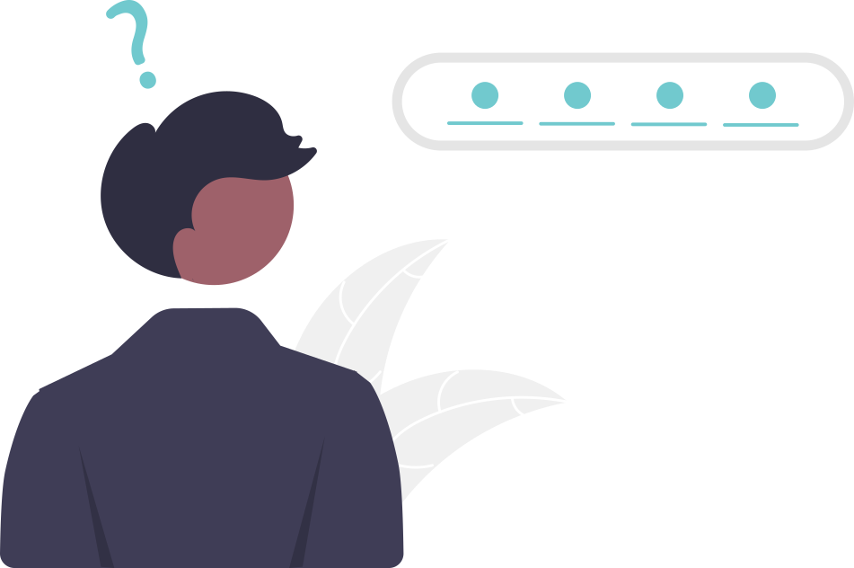

<ion-header>
  <ion-toolbar>
    <ion-title>One Time Pin</ion-title>
    <ion-buttons slot="start" >
      <ion-back-button defaultHref="/" color="primary"></ion-back-button>
    </ion-buttons>
  </ion-toolbar>
</ion-header>

<ion-content>
  <div class="container">
    <div class="image-wrapper">
      
    </div>
    <div class="form-wrapper">
      <form [formGroup]="otpForm">
        <ion-item lines="none">
          <ion-label color="tertiary">One Time Pin</ion-label>
          <ion-input formControlName="OTP"></ion-input>
        </ion-item>
        <ion-button type="submit" [disabled]="!otpForm.valid" color="primary" (click)="checkOTP()">Submit</ion-button>
      </form>
    </div>
  </div>
</ion-content>
